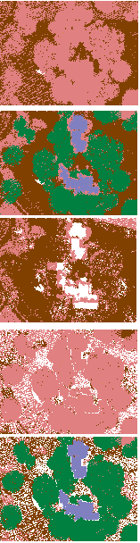

Requires
- Single LAS file for both the original and #2.
- Have the same number of points in the same order
Designed to compare classifications. Since MICRODEM does not do classifications, you must be sure that the classifiers used do not violate the requirements above.
With two classifications for the same point cloud, there are 5 options for plotting the map displays and slices
- Classification 1
- Classification 2
- Both agree
- Different, show 1
- Different, show 2
Because these work from the point cloud in memory, they will be very fast, and you can rapidly toggle between choices.
In this example Classification 1 does not include any buildings or vegetation in the maps on the left..